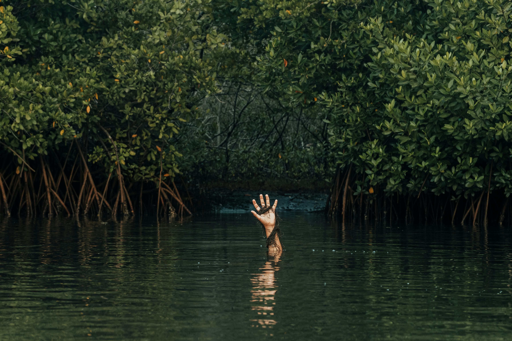
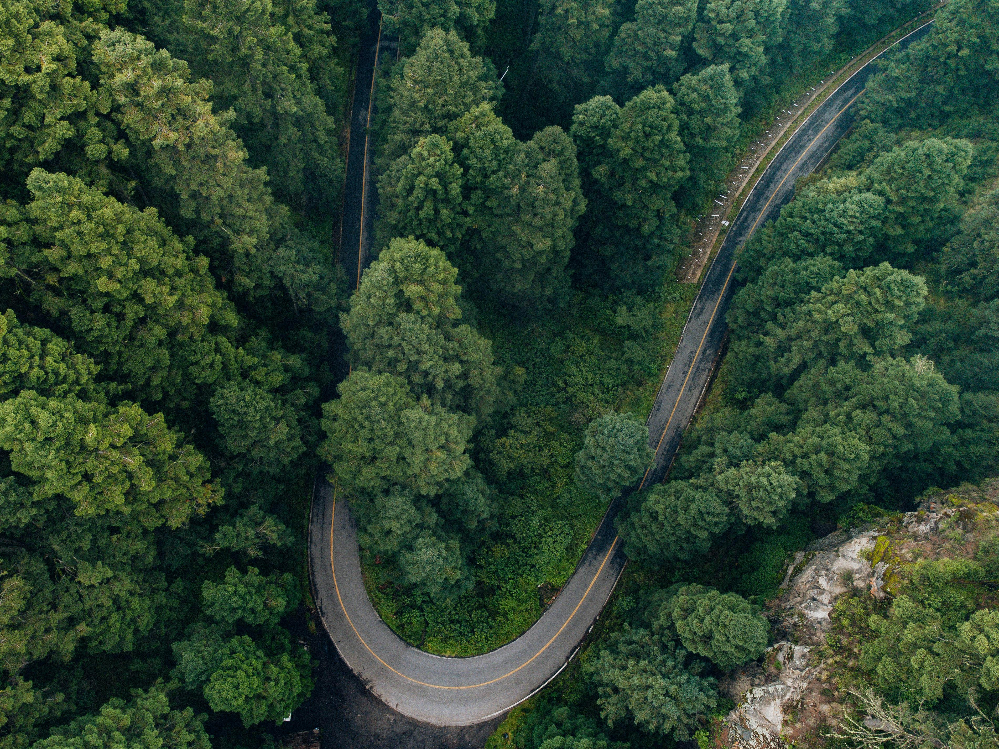
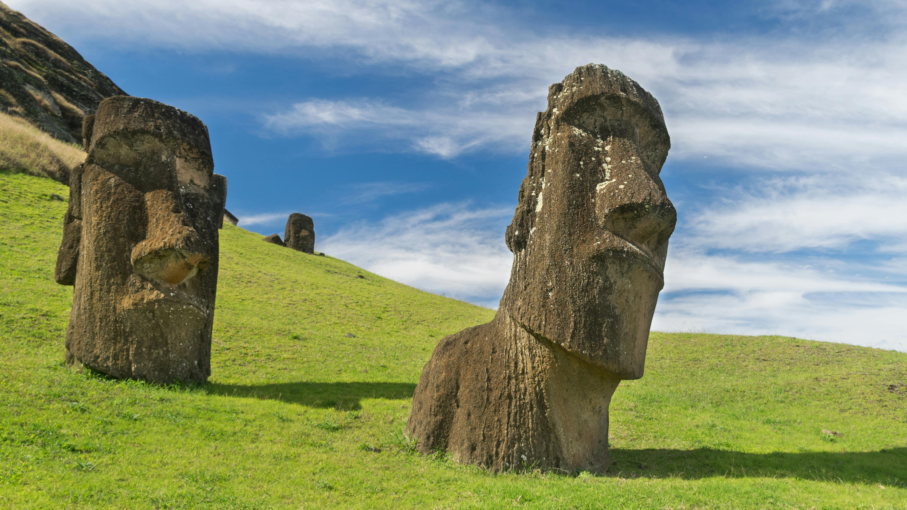
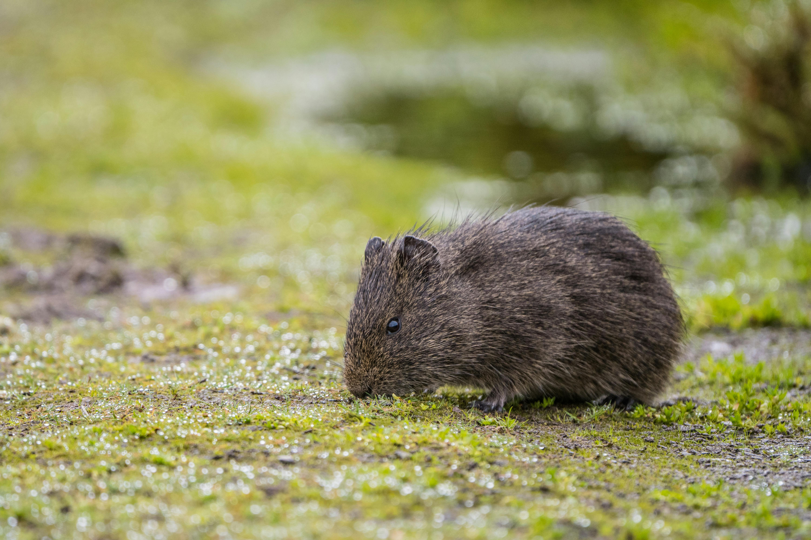

A peaceful swamp scene, showcasing lush green vegetation and calm, reflective waters. The area is teeming with natural beauty, with tall grasses and trees surrounding the still water, creating a serene and untouched atmosphere. #Swamp

A scenic road winds through a lush forest, with tall trees lining both sides and sunlight filtering through the leaves. The peaceful pathway invites you to take a leisurely drive and enjoy the beauty of nature all around. #Forest #Road

This photo features the iconic Moai statues, the mysterious stone figures carved by the Rapa Nui people on Easter Island. These impressive monoliths stand tall against the landscape, showcasing their ancient craftsmanship and cultural significance. They seem to watch over the island, embodying a sense of history and mystery that continues to fascinate visitors from around the world. #moaistime #moaisarecool

A adorable wombat sitting peacefully, showcasing its cute, round face and soft fur. Its curious eyes and gentle demeanor make it impossible not to smile. Such a charming little creature from the Australian wilderness! #Wombat #Animals